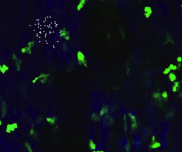

Particle filter
今回はパーティクルフィルターの紹介をしたいと思います。 といってもやり始めたばっかなので、間違っていたらご指摘お願いします。
手順
基本は以下の４つのサイクルを繰り返すだけです。
- リサンプリング
- 予測
- 観測
- 尤度計算 重みの更新
と言っても分かりにくかったんで、イメージで話すと
- まず粒子（パーティクル）を全体に振りかけます
- 振りかけたなかで、あってそうな粒子だけ生き残ってもらい、それ以外は消えてもらいます。
- あってそうなものは、尤度（確からしさ）を計算して其れに（おおよそ）従い新たに粒子を撒きなおします（ちょっとランダムウォークさせます）
ってかんじで対象の動きを推定してくれます。
なんでいきなりパーティクルフィルターの話をしたかというと、こいつは画像解析の分野ではノイズや予想外の動きによって影響を受けにくく、しっかりと標的のものを追ってくれるかなり有用な方法らしいからです。
まあとりあえずやってみよう。ということでpython3+opencvを使いました。 Opencvをpythonで使えるようになったのは結構最近なので、なかなか良い本がないのですが、公式のチュートリアルが結構役に立ちます。
でも、やってたら結構間違いもあるので、注意してください。あと、有料ですがUdemyでもopencv+pythonの講座があるので、試してみても良いかもしれません。 先ほど紹介したコンピュータビジョン最先端ガイドも理論がわからない時便利です。
うまくいった例はネットに大量にあるので、興味のある方は検索してみてください。
ちなみにパーティクルフィルターでの一番の肝は、↑の4．尤度関数の設定の仕方です。 今回は色の尤度の他に、距離でも尤度を設定して（つまりある時点で散らばっている粒子の重心からの距離を考えるということ）それらをかけたものを最終の尤度のしました。 ブラウン運動ではなく、今回のように細胞の動きを追う場合では、次のフレームで動きそうなところの尤度を大きくすればもっと正確に動きを追いかけられるみたいです。難しい。。。
実装
以下、『Udemy 【Pythonで学ぶ】OpenCVでの画像処理入門』のコードを参考にさせていただきました。
import cv2
import numpy as np
import os
import sys
import matplotlib.pyplot as plt
from tqdm import tqdm
import time
for i in tqdm(range(100)):
time.sleep(0.1) #プログレスバーの表示
args = sys.argv #コマンドライン引数
cap = cv2.VideoCapture("/movie/lps.avi")
if cap.isOpened() == False:
sys.exit
ret, frame = cap.read()
h, w =frame.shape[:2]#大きさを取得
fourcc = cv2.VideoWriter_fourcc(*"mp4v")
output_dst = cv2.VideoWriter("/output/test[{0},{1}].m4v".format(args[1],args[2]),fourcc,5.0,(w,h))#動画出力の設定
np.random.seed(100)#乱数の初期化,毎回同じ乱数になる
Np = 50#粒子の数
obj = [int(float(args[1])),int(args[2])] #目的の（追いかける）標的の座標0~512
WD = 100
px = np.zeros((Np),dtype=np.int64)#粒子のx座標
py = np.zeros((Np),dtype=np.int64)#粒子のy座標
lc = np.zeros((Np))#粒子の色の尤度
ls = np.zeros((Np))#粒子の空間の尤度
lt = np.zeros((Np))#粒子の尤度total
index = np.arange(Np)
#objの周りに撒く
d = 10
px = np.random.normal(obj[0], d, Np).astype(np.int)
py = np.random.normal(obj[1], d, Np).astype(np.int)
j = 0
artists = []
while True:
ret, frame = cap.read()#１枚読み込み
if ret == False:
break#最後になったらループから抜ける
gx = np.average(px)
gy = np.average(py)#１フレーム前の粒子の重心
for i in range(Np):
lc[i] = frame[py[i],px[i]][1] / 255.0#色の尤度
ls[i] = np.exp(-((px[i] - gx) ** 2 + (py[i] - gy) ** 2)/(WD ** 2))
lt[i] = lc[i] * ls[i]
lt = lt / lt.sum()
pnew_index = np.array(random.choices(population=index,weights=lt,k=Np))
pxnew = px[pnew_index] + np.random.randint(-15,15,Np)
pynew = py[pnew_index] + np.random.randint(-15,15,Np)
plt.hist(lt)
#リサンプリングした,ある程度ランダムウォーク
px = np.where(pxnew > w-1, w-1, pxnew)
py = np.where(pynew > h-1, h-1, pynew)
px = np.where(px < 0, 0, px)
py = np.where(py < 0, 0, py)#ランダムウォークで画面外に出る場合の処理
for i in range(Np): #画像の中に粒子を描く
cv2.circle(frame,(px[i],py[i]),1,(255,255,255),1)
cv2.imwrite("/output/test_tiff/test" + str(j) + ".tif" ,frame) #tiffでも保存
j = j + 1
output_dst.write(frame)
結果
こんな感じです。

最初は尤度を計算するとき以下のようにやってました。
pxnew = np.array(random.choices(population=px,weights=lt,k=Np)) + np.random.randint(-15,15,Np)
pynew = np.array(random.choices(population=py,weights=lt,k=Np)) + np.random.randint(-15,15,Np)
これではxとyを別々に計算してしまっているので、微妙に結果がおかしい感じになってました。（点が四角っぽくなる） 確かにそれはそうか。ランダムに選ぶのは１回でいいはず。。。。
こういうとき、適当にindexとかおいてやるとうまくいくんですね。 今回もpnew_indexをおいてしまうという感じでやってます。
pnew_index = np.array(random.choices(population=index,weights=lt,k=Np))
pxnew = px[pnew_index] + np.random.randint(-15,15,Np)
pynew = py[pnew_index] + np.random.randint(-15,15,Np)